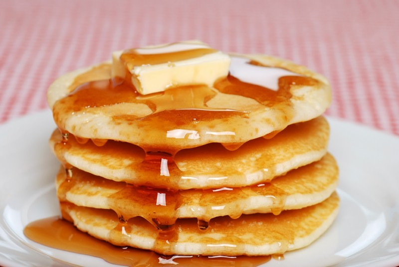

Table of Contents

Blending in the flour: Put the flour and a pinch of salt into a large mixing bowl and make a well in the centre. Crack the eggs into the middle, then pour in about 50ml milk and 1 tbsp oil. Start whisking from the centre, gradually drawing the flour into the eggs, milk and oil. Once all the flour is incorporated, beat until you have a smooth, thick paste. Add a little more milk if it is too stiff to beat. Finishing the batter: Add a good splash of milk and whisk to loosen the thick batter. While still whisking, pour in a steady stream of the remaining milk. Continue pouring and whisking until you have a batter that is the consistency of slightly thick single cream. Traditionally, people would say to now leave the batter for 30 mins, to allow the starch in the flour to swell, but there is no need. Getting the right thickness: Heat the pan over a moderate heat, then wipe it with oiled kitchen paper. Ladle some batter into the pan, tilting the pan to move the mixture around for a thin and even layer. Quickly pour any excess batter into a jug, return the pan to the heat, then leave to cook, undisturbed, for about 30 secs. Pour the excess batter from the jug back into the mixing bowl. If the pan is the right temperature, the pancake should turn golden underneath after about 30 secs and will be ready to turn. Flipping pancakes: Hold the pan handle, ease a fish slice under the pancake, then quickly lift and flip it over. Make sure the pancake is lying flat against base of the pan with no folds, then cook for another 30 secs before turning out onto a warm plate. Continue with the rest of the batter, serving them as you cook or stack onto a plate. You can freeze the pancakes for 1 month, wrapped in cling film or make them up to a day ahead.